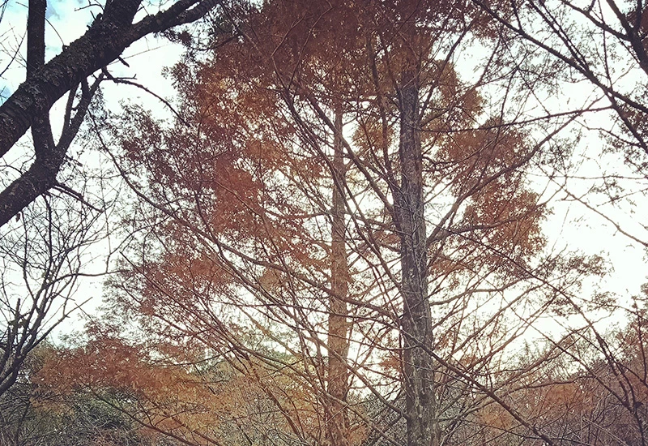
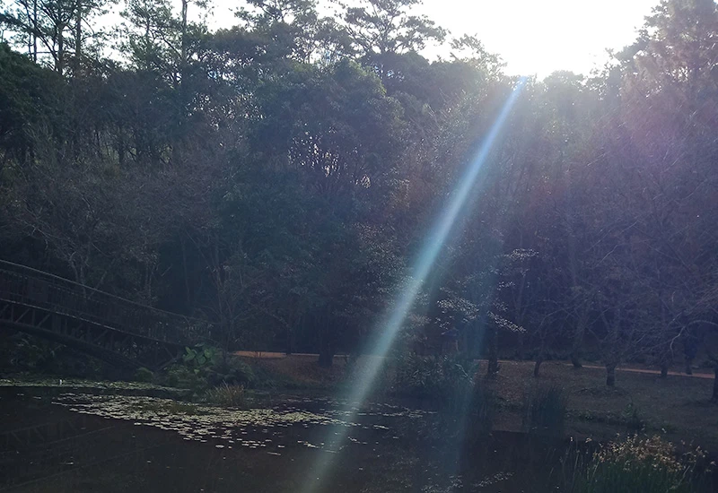
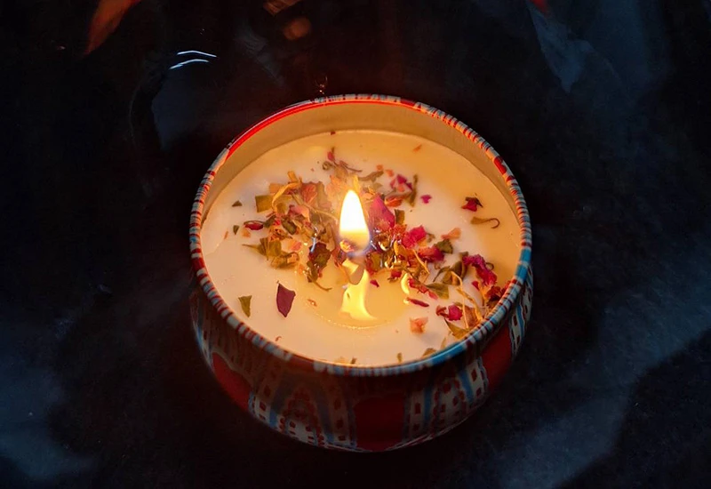
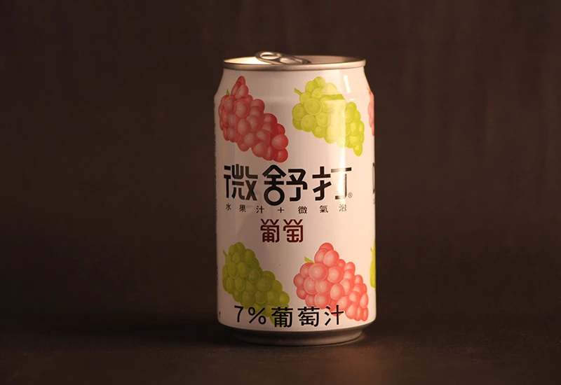

LANDSCAPE
風景攝影

秋葉
這幅作品捕捉了季節更迭的詩意。鏡頭仰望挺拔的落羽松，橘紅與棕褐交織的枝葉在微光下顯得優雅且深邃。垂直拉升的構圖強調了樹木的生命力度，與後方幽靜的林景形成虛實對比，帶出一種蕭瑟卻溫暖的深秋氛圍，引領觀者進入這場大自然的色彩饗宴。

光
記錄山林湖畔的清晨光束，運用自然光影藝術與風景攝影技巧，捕捉靜謐環境中生命躍動的視覺瞬間，捕捉山林湖畔的清晨光束，運用自然光影藝術與專業風景攝影技巧，將靜謐環境中生命躍動的瞬間化為視覺永恆，展現出極具層次感與敘事力的自然美學構圖。
Still life photography
靜物攝影

燭火
捕捉溫暖火焰與乾燥花瓣的交織，透過精緻的靜物攝影與層次分明的光影處理，營造出療癒感十足的居家空間氛圍。

商業飲品拍攝
運用專業商業攝影燈光控製，完美呈現產品標誌與色彩張力，透過精準的構圖美學強化飲品包裝質感與品牌魅力。。